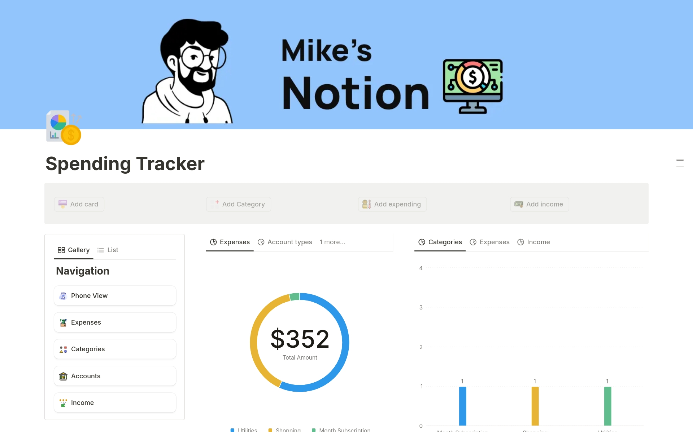
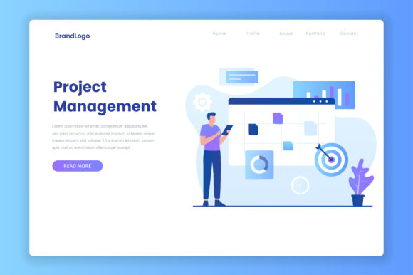

This system is designed to facilitate online buying and selling of products or services. It allows users to browse, search, and purchase items, while sellers can manage inventory, orders, and customer relationships. Features typically include product catalogs, shopping carts, secure payment gateways, user accounts, and customer reviews, creating a seamless online shopping experience for both buyers and sellers.

Financial Tracking System
This system enables individuals or businesses to monitor and manage their finances. It tracks income, expenses, and investments, providing real-time reports and insights into financial health. Features might include budget creation, expense categorization, transaction history, and forecasting, helping users make informed financial decisions and stay within their budgets.

Task Scheduling Management System
This system helps users efficiently plan and track their tasks and projects. It allows users to create, assign, prioritize, and set deadlines for tasks, while also providing reminders and notifications. The system can include features like task categorization, progress tracking, calendar views, and team collaboration, ensuring that all deadlines are met and tasks are completed in an organized manner.